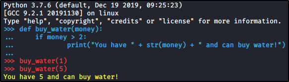
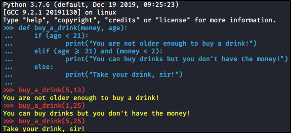
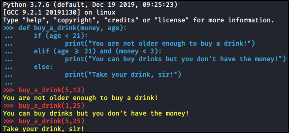

Conditional Statements in Python
If Statement:
If certain condition are reached, do something
If Statement structure:
if boolean_expression:
# Do something


If/Else statement:
If certain condition are reached, do something, else do something else
If/Else statement structure:
if boolean_expression:
# Do something
else:
# Do something else


If/Elif statement:
If certain condition are reached, do something, else if certain condition are reached, do something etc...
You can append how much elif you like!
If/Elif statement structure:
if boolean_expression_1:
# Do something
elif boolean_expression_2:
# Do something
else:
 
